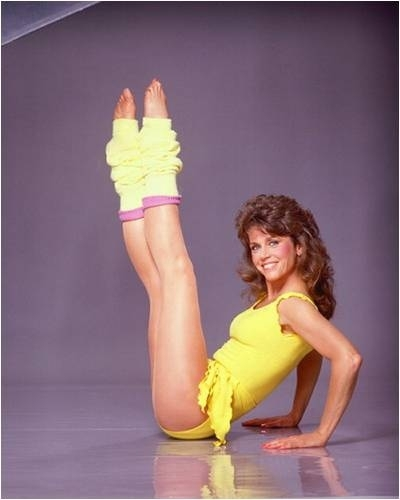

Beauty Through the Paleolithic Era
1 / 10
22,000BC, Europe: Voluptuous and well-nourished
Beauty Through the Tang Dynasty
2 / 10
700AD, China: Plump and full-bodied women were a sign of wealth
Beauty Through the Italian Renaissance
3 / 10
1400s, Italy: Plump and well nourished women were a sign of wealth
Beauty Through the 1900s
4 / 10
1900, USA: "Gibson Girls" -- small waists and large busts
Beauty Through the 1920s
5 / 10
1920, USA: Thin with narrow hips
Beauty Through the 1940s-1950s
6 / 10
1940s-50s USA: Skinny is no longer fashionable, curves are "in"
Beauty Through the 1980s
7 / 10

1980, USA: Lean and athletic bodies are fashionable
Beauty Through the 1990s
8 / 10
1990s USA: The rise of the super-thin supermodel, "Heroin-chic"
Beauty Through the 2000s
9 / 10
2000s USA: Popularisation of the curvy-thin body
Beauty Through NOW!
10 / 10
Present USA: Body-inclusivity and curves
❮
❯
Beauty is a social construct.
Throughout thousands of years of human history, what is considered beautiful has evolved.
Beauty is determined by social norms, social interactions, media, and culture. What some people take to be normal,
or beautiful in one culture is completely different from what others perceive to be beautiful.
Thus, beauty is based on one's perspective and social experiences, and is not objective. Beauty is subjective.
While the slideshow focuses on how beauty has changed for women, men are also affected by society's standards of beauty and attractiveness.
Social constructs have created the idea that men should be taller than women, more muscular, and more athletic.
It is important to remember that body-confidence affects everyone!